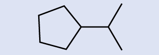
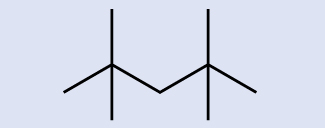
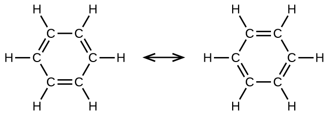

第20章 有機化学

図20.1 | すべての有機化合物は炭素を含み、そのほとんどは生物によって形成されますが、それらはまた、地質学的および人工的なプロセスによっても形成されます。(credit left: modification of work by Jon Sullivan; credit left middle: modification of work by Deb Tremper; credit right middle: modification of work by “annszyp”/Wikimedia Commons; credit right: modification of work by George Shuklin)
この章の概要
20.1 炭化水素
20.2 アルコールとエーテル
20.3 アルデヒド、ケトン、カルボン酸、およびエステル
20.4 アミンとアミド
はじめに
地球上のすべての生物は、ほとんどが炭素化合物で形成されています。生物に炭素化合物が多く含まれていることから、「炭素をベースにした」生物という呼び名につながりました。実際のところ、私たちは他の種類のどのような生命も知りません。初期の化学者たちは、生物(植物や動物)から単離された物質を、人工的に合成することのできない別種類の物質であるとみなし、それらの物質は有機化合物として知られていました。生気論と呼ばれる広く普及した信念では、有機化合物は生物の中にしか存在しない生命力によって形成されると考えられていました。ドイツの化学者フリードリヒ・ヴェーラーは、1828年に多くの体液の成分である尿素を生物以外の物質から合成したことを報告し、生気論のこの側面に反論した初期の化学者の1人となりました。それ以来、有機分子は無機物質と同じ自然法則に従うことが認識され、有機化合物のカテゴリーは、炭素を含む天然化合物と合成化合物の両方を含むように進化してきました。炭素を含む化合物の中には、有機物として分類されないものもあり、たとえば、炭酸塩やシアン化物、COやCO₂のような単純な酸化物などが挙げられます。化学界ではまだ単一の正確な定義は特定されていませんが、有機分子の決定的な特徴は、水素や他の炭素原子に結合した炭素が主たる元素として存在することであるということに、ほとんどの人が同意しています。
今日、有機化合物は、プラスチック、石鹸、香水、甘味料、繊維、医薬品、その他私たちが毎日使用する多くの物質の主要な構成要素となっています。有機化合物が私たちにとって価値のあるものであるため、有機化学は化学という一般的な分野の中で確実に重要な学問分野となっています。本章では、私たちは、炭素という元素がなぜ膨大な数の多様な化合物を生み出すのか、それらの化合物はどのように分類されるのか、そして代表的な生物学的・工業的環境における有機化合物の役割について議論します。
20.1 炭化水素
この節が終わるまでに、あなたは次のことができるようになります:
•炭化水素の重要性とその多様性の理由を説明する
•飽和炭化水素と不飽和炭化水素、およびそれらに由来する分子の名前を挙げる
•飽和炭化水素と不飽和炭化水素に特徴的な反応を記述する
•炭化水素の構造異性体と幾何異性体を特定する
有機化合物の最大のデータベース[1]には、生物由来の化合物や化学者によって合成された化合物を含む、約1000万種類の物質が掲載されています。潜在的な有機化合物の数は10⁶⁰と推定されており[2]、これは天文学的に大きな数です。これほど多くの有機分子が存在するのは、炭素原子が他の炭素原子と最大4つの強い結合を形成し、さまざまな大きさ、形、複雑さの鎖や環を形成することのできる能力の結果です。
最も単純な有機化合物は、炭素と水素という元素だけを含むものであり、炭化水素と呼ばれています。それらはたった2種類の原子のみで構成されているにもかかわらず、炭化水素の種類は多岐にわたります。なぜなら、それらは、炭素原子のさまざまな長さの鎖、分岐した鎖、環、あるいはこれらの構造の組み合わせで構成されているからです。さらに、炭化水素は、その分子内に存在する炭素-炭素結合の種類が異なる場合があります。多くの炭化水素は、植物、動物、およびそれらの化石の中に見られますが、その他の炭化水素は実験室で調製されています。私たちは毎日のように炭化水素を主に燃料(天然ガス、アセチレン、プロパン、ブタン、そしてガソリン、ディーゼル燃料、および暖房用灯油の主成分など)として使用しています。また、身近なプラスチックであるポリエチレン、ポリプロピレン、ポリスチレンも炭化水素です。私たちは、いくつかの種類の炭化水素を、炭素原子間の結合の違いによって区別することができます。これにより、炭素軌道の混成や幾何構造の違いが生じます。
アルカン
アルカン(または飽和炭化水素)は、炭素原子間の単一の共有結合のみを含んでいます。アルカンの中のそれぞれの炭素原子はsp³混成軌道を持ち、4つの他の原子(それぞれが炭素または水素のいずれか)と結合しています。メタン、エタン、ペンタンのルイス構造とモデルが図20.2に示されています。通常、ルイス構造では炭素鎖は直線で描かれますが、ルイス構造は分子の幾何構造を示すのを意図したものではないことを思い出さなければなりません。ペンタン分子の構造モデル(玉と棒モデルと空間充填モデル)では、炭素原子が直線上にないことに注意してください。sp³混成しているために、炭素鎖の結合角は109.5°に近く、アルカンの中のこのような鎖はジグザグ状になっています。
また、アルカンおよび他の有機分子の構造は簡略構造式(または単に簡略式)によって、詳細を省いた形で表現されることもあります。それぞれの元素記号が一度だけ現れる化学式の通常の形式の代わりに、簡略式は分子内の結合を示唆するように書かれます。これらの化学式は、結合記号のほとんどまたはすべてが取り除かれたルイス構造のような見た目をしています。エタンとペンタンについての簡略構造式が図20.2の下に示されており、この章の最後の練習問題では、いくつかの追加の例が提供されています。

図20.2 | メタン、エタン、およびペンタンの分子についてのルイス構造、玉と棒モデル、空間充填モデルが示されています。
有機化学者がより大きな分子の描画を簡略化するためによく使う方法は、骨格構造(ライン-アングル構造とも呼ばれます)を使うことです。このタイプの構造では、炭素原子はCで記号化されず、線のそれぞれの端部または線の屈曲によって表されます。水素原子は、炭素に結合している場合は描かれません。炭素と水素以外の他の原子は、その元素記号によって表されます。図20.3は、同じ構造を描くための3つの異なる方法を示しています。
図20.3 | 同じ構造でも、拡張式、簡略式、骨格構造の3つの異なる方法で表現することができます。
例題20.1 骨格構造を描く
これら2つの分子の骨格構造を描いてください:
解法
それぞれの炭素原子は、線の端部、または線が交差する場所へと変換されます。炭素原子に結合している水素原子はすべて構造から除かれています(それでも、私たちはそれらがそこに存在していることを認識する必要がありますが):
学習内容の確認
これら2つの分子の骨格構造を描いてください:
解答:
例題20.2 骨格構造を解釈する
ここに表された分子の化学式を特定してください:

解法
線が交わる場所や終わる場所が8か所あるということは、この分子の中に炭素原子が8個あることを意味します。私たちは、炭素原子が4つの結合を作る傾向があることを知っているので、それぞれの炭素原子は4つの結合に必要な数の水素原子を持っていることになります。この化合物は、16個の水素原子を含んでおり、分子式はC₈H₁₆です。
水素原子の位置:
学習内容の確認
ここに表された分子の化学式を特定してください:

解答:C₉H₂₀
すべてのアルカンは炭素原子と水素原子で構成されており、結合、構造、化学式は類似しています。非環状アルカンはすべてCₙH₂ₙ₊₂の化学式を有しています。アルカンの中に存在する炭素原子の数に制限はありません。分子内の原子数が多いほど、分子間引力(分散力)が強くなり、それに応じて分子の物理的性質が異なるようになります。融点や沸点(表20.1)のような性質は、通常、分子内の炭素原子や水素原子の数が変化すると、滑らかで予測可能な形で変化します。
表20.1
アルカンを含む同じ化学式の炭化水素は、異なる構造を持つことがあります。たとえば、2つのアルカンが化学式C₄H₁₀を有しています:それらはn-ブタンと2-メチルプロパン(またはイソブタン)と呼ばれ、以下のようなルイス構造を持っています:
化合物のn-ブタンと2-メチルプロパンは、構造異性体です(構成異性体という用語も一般的に使用されています)。構造異性体は、分子式は同じですが、分子内の原子の空間的配置が異なります。n-ブタン分子は、分岐していない鎖(どの炭素原子も、2つよりも多い他の炭素原子に結合していないことを意味します)を含みます。私たちは、枝分かれしていない炭素原子の鎖を参照するために、非分岐(ノーマル)という用語、または接頭辞nを使用します。化合物2-メチルプロパンは、分岐した鎖を持っています(ルイス構造の中心にある炭素原子は、3つの他の炭素原子に結合しています)。
ルイス構造から異性体を識別することは、見た目ほど簡単ではありません。異なるように見えるルイス構造が、実際には同じ異性体を表していることもあります。たとえば、図20.4の3つの構造はすべて同じ分子であるn-ブタンを表しているので、それらは異なる異性体ではありません。それらは、それぞれが4つの炭素原子からなる分岐していない鎖を含んでいるので同一です。

図20.4 | n-ブタンの構造を表したこれら3つの表現は、異性体ではありません。なぜなら、それらはすべて原子と結合についての同じ配列を含んでいるからです。
有機物の命名法の基本:アルカンに名前を付ける
国際純粋・応用化学連合(IUPAC)は、アルカンの名前から始まり、そこからより複雑な構造を説明するために調整できるような命名法の体系を考案しました。アルカンの命名法は2つのルールに基づいています:
アルカンの名前を付けるには、まず、その構造の中で最も長い炭素原子の鎖を特定します。2つの炭素の鎖はエタン、3つの炭素の鎖はプロパン、4つの炭素の鎖はブタンと呼ばれます。より長い鎖は以下のように命名されます:ペンタン(5つの炭素の鎖)、ヘキサン(6)、ヘプタン(7)、オクタン(8)、ノナン(9)、デカン(10)。これらの接頭辞は、表20.1に記載されているアルカンの名前に見ることができます。
最も長い鎖の名前に接頭辞を付けて、置換基の位置と名前を示します。置換基とは、鎖上の水素原子を置換する分岐または官能基のことです。置換基や分岐の位置は、鎖の中でそれが結合している炭素原子の番号によって特定されます。私たちは、置換基に最も近い鎖の端部から数えることによって、鎖内の炭素原子に番号を付けます。複数の置換基には個別に名前を付け、アルカンの名前の先頭にアルファベット順に配置します。
複数の置換基が同じ炭素原子上または異なる炭素原子上に存在する場合、置換基はアルファベット順に記載されます。炭素原子の番号付けは、置換基に最も近い端部から始まるので、炭素原子の最も長い鎖には、置換基について最も小さい番号を作り出すような方法で番号が付けられます。末尾の-オ(-o)は、電気的に陰性な置換基の名前の最後にある-アイド(-ide)を置き換えます(イオン化合物では、負に帯電したイオンは、-アイド(-ide)で終わります(クロライドのように)。有機化合物では、そのような原子は置換基として扱われ、末尾の-オ(-o)が使用されます)。同じ種類の置換基の数は、接頭辞のジ-(di-:2つの場合)、トリ-(tri-:3つの場合)、テトラ-(tetra-:4つの場合)などによって示されます(たとえば、ジフルオロ-(difluoro-)は2個のフッ化物置換基を示します)。
例題20.3 ハロゲン置換アルカンに名前を付ける
ここに構造が示されている分子の名前を付けてください:
解法
4つの炭素の鎖には塩素原子を伴う端部から番号が付けられます。これにより、置換基は位置1と位置2に来ることになります(反対側の端部から番号を付けると、置換基は位置3と位置4になるでしょう)。4つの炭素原子があるということは、この化合物の基本となる名前がブタンであることを意味します。位置2の臭素は2-ブロモ-を追加することによって記述されます。アルファベット順ではブロモ-がクロロ-の前に来るので、2-ブロモ-が名前の先頭に来るでしょう。位置1の塩素は1-クロロ-を追加することによって記述されます。その結果、この分子の名前は2-ブロモ-1-クロロブタンになります。
学習内容の確認
以下の分子に名前を付けてください:
解答:3,3-ジブロモ-2-ヨードペンタン
私たちは、対応するアルカンより1個少ない水素を含む置換基をアルキル基と呼びます。アルキル基の名前は、アルカン名の接尾辞-アン(-ane)を外して-イル(-yl)を加えることによって得られます:
メチル基とエチル基の開いている結合は、これらのアルキル基が別の原子に結合していることを示しています。
例題20.4 置換されたアルカンに名前を付ける
ここに構造が示されている分子に名前を付けてください:

解法
最も長い炭素鎖はページを横切って水平に走っており、6つの炭素原子を含んでいます(これにより、名前の基本はヘキサンとなりますが、私たちは枝の名前も組み込む必要があります)。この場合、私たちは右から左へと番号を付けたいので(青色の数字で示されているように)、枝は炭素3に接続されています(左から右への番号を想像してみてください—これは、枝が炭素4に置かれることになり、私たちの規則に違反します)。鎖の位置3に結合した枝には、2つの炭素原子が含まれています(赤色の数字で示されています)。そこで、私たちは、2つの炭素についての名前エタ-(eth-)を取り上げ、枝を記述していることを示すために、最後に-イル(-yl)を付けます。すべての部分をまとめると、この分子は3-エチルヘキサンになります。
学習内容の確認
以下の分子に名前を付けてください:
解答:4-プロピルオクタン
一部の炭化水素は、除去される水素原子が分子内で異なる「環境」を持つ場合に、複数のタイプのアルキル基を形成することができます。あり得るアルキル基についてのこのような多様性は、以下の方法によって特定することができます:メタン分子内の4つの水素原子は等価であり、それらはすべて同じ環境を持っています。4つの水素原子のそれぞれが、3つの水素原子に結合している炭素原子(同じ炭素原子)へと結合しているので、それらは等価です。(図20.2の玉と棒モデルのほうが、等価性を理解しやすいかもしれません。)メタンから4つの水素原子のいずれか1つを取り除くとメチル基が形成されます。同様に、エタン中の6つの水素原子も等価であり(図20.2)、これらの水素原子のどれか1つを取り除くとエチル基ができます。6つの水素原子のそれぞれは、他の2つの水素原子と1つの炭素原子とが結合している炭素原子へと結合しています。しかしながら、プロパンと2-メチルプロパンの両方においては、水素原子は、隣接する原子または複数原子の基によって区別される2つの異なる環境の中に存在します:
プロパンの中の第1のタイプの6個の等価な水素原子の各々と、2-メチルプロパンの中の第1のタイプの9個の等価な水素原子の各々(全て黒色で示されています)は、1つだけの他の炭素原子に結合している炭素原子へと結合しています。プロパンの中の2つの紫色の水素原子は、第2のタイプのものです。これらの水素原子は、2つの他の炭素原子に結合した炭素原子へと結合しているという点で、第1のタイプの6つの水素原子とは異なります。2-メチルプロパンの中の緑色の水素原子は、この分子に含まれる他の9つの水素原子や、プロパンに含まれる紫色の水素原子とは異なります。2-メチルプロパンの中の緑色の水素原子は、3つの他の炭素原子に結合した炭素原子へと結合しています。どの水素原子が取り除かれるかに応じて、これらの分子のそれぞれから2つの異なるアルキル基が形成され得ます。これらと他のいくつかのアルキル基の名前と構造が図20.5に示されています。
図20.5 | このリストは、異なる位置から水素原子を除去することによって形成されるさまざまなアルキル基の名前と式を示しています。
アルキル基は安定した独立の実在物としては存在しないことに注意してください。それらは常に何らかのより大きな分子の一部です。炭化水素鎖上のアルキル基の位置は、他の置換基と同じように表示されます:
アルカンは比較的安定な分子ですが、熱や光によってC-HやC-Cの単結合の切断を伴う反応が起こります。燃焼はそのような反応の1つです:
\[ {\rm CH_4\ (g) + 2O_2\ (g) ⟶ CO_2\ (g) + 2H_2 O\ (g)}\\ \]
アルカンは酸素の存在下で燃焼します。これは、非常に発熱性の高い酸化-還元反応であり二酸化炭素と水を生成します。その結果として、アルカンは優れた燃料となります。たとえば、メタン(CH₄)は天然ガスの主成分です。キャンプのストーブやライターに使用されるブタン(C₄H₁₀)はアルカンです。ガソリンは、連続した鎖のアルカンと分岐した鎖のアルカン(それぞれ5個から9個の炭素原子を含みます)の液体混合物であり、燃料としての性能を向上させるためにさまざまな添加剤が加えられています。灯油、ディーゼル燃料、燃料油は、主として分子量の高いアルカンの混合物です。これらの液体アルカン燃料の主な原料は原油です。原油は複雑な混合物であり、それらは分留によって分離されます。分留は、混合物の成分の沸点の違いを利用するものです(図20.6参照)。あなたは、沸点とは分子間相互作用の関数であり、それが溶液とコロイドの章で議論されていたのを思い出すことができるでしょう。
図20.6 | 原油の分留塔では、炉内で約425°Cに加熱された油が塔の底部に入ると蒸発します。蒸発した油分は塔内の一連のトレイの泡鐘を通って上昇します。蒸気が徐々に冷えていくと、まず高沸点の、その後に低沸点のものが液体へと凝縮し、排出されます。(credit left: modification of work by Luigi Chiesa)
アルカンのもう1つの典型的な反応である置換反応では、アルカンの水素原子の1つかそれ以上が別の原子または複数原子の基で置換されます。これらの反応では、炭素-炭素結合は切断されず、炭素原子の混成は変化しません。たとえば、ここに描かれているエタンと塩素分子との反応は置換反応です:
クロロエタン分子のC-Cl部分は官能基の一例であり、特定の化学反応性を付与する分子の部分や部位です。有機分子に存在する官能基の種類は、その化学的性質を決定する主要な要素であり、本章の残りの節で詳述されているように、有機化合物を分類するための手段として使用されます。
学習へのリンク
アルカンの命名の練習をもっとしたいですか? この短いビデオチュートリアル(http://openstaxcollege.org/l/16alkanes)を見て、命名法のプロセスを復習してください。
アルケン
炭素原子間に1つかそれ以上の二重結合または三重結合を含む有機化合物は、不飽和として記述されます。あなたはおそらく、不飽和脂肪という言葉を聞いたことがあるでしょう。これらは、炭素原子の長い鎖を持つ複雑な有機分子で、炭素原子間に少なくとも1つの二重結合を含んでいます。1つかそれ以上の二重結合を含む不飽和炭化水素分子はアルケンと呼ばれています。二重結合で結ばれた炭素原子は、1つのσ結合と1つのπ結合という2つの結合によって結合しています。二重結合と三重結合は、それらに参加している炭素原子の周りで異なる幾何構造を生じさせ、分子の形状や性質における重要な違いにつながります。異なる幾何構造は、不飽和脂肪と飽和脂肪の異なる性質の原因となっています。
エテン(C₂H₄)は最も単純なアルケンです。エテン(一般的にはエチレンと呼ばれます)の中のそれぞれの炭素原子は、平面三角形構造を有しています。この系列の2番目のメンバーは、プロペン(プロピレン)です(図20.7)。ブテンの異性体がこの系列で続きます。ブテンの鎖に炭素原子が4個あることで、二重結合の位置による異性体の形成が可能になるとともに、新しい形態の異性も可能になります。

図20.7 | アルケンのエテン、プロペン、1-ブテンの拡張構造、玉と棒構造、空間充填モデルが示されています。
エチレン(エテンの一般的な工業名)は、ポリエチレンをはじめとする重要な化合物を生産する際の基本的な原材料です。2010年には世界で1億3500万トン以上のエチレンが生産され、ポリマー産業、石油化学産業、プラスチック産業で使用されています。エチレンは、石油混合物中の長い炭化水素鎖を小さな分子に分解するクラッキングと呼ばれるプロセスで工業的に生産されています。
日常生活の中の化学
プラスチックをリサイクルする
ポリマー(ギリシャ語で「多くの」を意味するpolyと「部品」を意味するmerに由来します)は、繰り返し単位(モノマーと呼ばれます)からなる大きな分子です。ポリマーは、天然のもの(デンプンは糖残基のポリマー、タンパク質はアミノ酸のポリマー)であることも、合成のもの(ポリエチレン、ポリ塩化ビニル(PVC)、ポリスチレンなど)であることもあります。ポリマーの構造が多様であることから、その性質や用途は多岐にわたっており、私たちの日常生活に欠かせないものとなっています。ポリマーの構造に官能基を付加することで、大幅に異なる性質が得られることがあります(本章の後のほうのケブラーについての議論を参照してください)。
重合反応の例が図20.8に示されています。モノマーであるエチレン(C₂H₄)は室温では気体ですが、遷移金属触媒を用いて重合すると、-CH₂-単位の長い鎖からなる固体物質(ポリエチレンと呼ばれます)に変化します。ポリエチレンは、主に包装材(袋やフィルム)に使われる汎用プラスチックです。
図20.8 | エチレンからポリエチレンへの重合反応が示されています。
ポリエチレンはプラスチックとして分類される合成ポリマーの1つの集合のメンバーです。プラスチックは合成有機物固体で成形可能なものです。それらは、典型的には高分子量の有機ポリマーです。一般的なプラスチック(エチレン、プロピレン、塩化ビニル、スチレン、エチレンテレフタレート)となるモノマーのほとんどは、石油化学製品に由来するものであり、生分解性が低いため、リサイクルの候補材料となっています。プラスチックをリサイクルすることで、石油化学製品の使用の必要性を最小化する助けになり、また、これらの生分解性のない物質を廃棄することによる環境への被害を最小限に抑えることができます。
プラスチックのリサイクルとは、廃棄されたものや小片の、または使用済みのプラスチックを回収し、その物質を有用な製品に再加工するプロセスのことです。たとえば、ポリエチレンテレフタレート(清涼飲料水のボトル)を溶かして、プラスチック製の家具に、カーペットに、または他の用途に使用することができます。また、ポリエチレン(バッグ)やポリプロピレン(カップ、プラスチック製の食品容器)のような他のプラスチックは、リサイクルするか、再加工して再び使用することができます。米国内の多くの地域では、リサイクルコードが割り当てられた汎用プラスチックのうちの1つかそれ以上に焦点を当てたリサイクルプログラムが実施されています(図20.9参照)。これらの活動は1970年代から実施されており、一部のプラスチックの生産は、今日の最も効率的な産業活動の1つとなっています。
図20.9 | リサイクル可能なプラスチックのそれぞれの種類には、識別しやすいようにコードが刻印されています。
アルケンの名前は、炭素原子の数が同じアルカンの名前から導出されます。二重結合の存在は、接尾辞の-アン(-ane)を接尾辞の-エン(-ene)に置き換えることによって示されます。二重結合の位置は、二重結合に参加している炭素原子の数字の小さい方の名前を付けることで特定されます:
アルケンの異性体
1-ブテンと2-ブテンは構造異性体です。これらの2つの分子では、原子の配置が異なります。配置の違いの例として、1-ブテンの最初の炭素原子は2つの水素原子に結合していますが、2-ブテンの最初の炭素原子は3つの水素原子に結合しています。
化合物の2-ブテンと他のいくつかのアルケンはまた、幾何異性体と呼ばれる第2のタイプの異性体も形成します。幾何異性体の1つの集合の中では、同じ種類の原子が同じ順序で互いに結合していますが、2つの分子の幾何構造は異なります。アルケンの幾何異性体は、C=C結合の両側にある基の向きが異なります。
炭素原子は単結合の周りでは自由に回転できますが、二重結合の周りでは回転できません。二重結合は固定されています。これにより、2-ブテンが2つの異性体を持つことが可能になります。1つは二重結合の同じ側に両方のメチル基を持つものであり、もう1つは反対側にメチル基を持つものです。ブテンの構造を、二重結合に参加しているsp²混成した炭素原子を中心に120°の結合角でもって描くと、異性体が明らかになります。2つのメチル基が同じ側にある2-ブテンの異性体はシス異性体と呼ばれ、2つのメチル基が反対側にあるものはトランス異性体と呼ばれます(図20.10)。幾何構造の違いによって沸点などの物理的性質が異なり、異性体の分離が可能になる場合があります:
図20.10 | これらの分子モデルは、ブテンの構造異性体および幾何異性体を示しています。
アルケンはC=C部位が反応性の官能基であるため、アルカンよりもはるかに反応性が高いです。π結合は弱い結合であるため、σ結合よりもはるかに簡単に破壊されます。そのため、アルケンはπ結合が壊れて2つのσ結合に置き換わるという特徴的な反応を起こします。この反応は付加反応と呼ばれます。付加反応の間には、アルケンの二重結合の炭素原子の混成がsp²からsp³に変化します。たとえば、ハロゲンはアルケンの二重結合に付加します(アルカンで起こるように水素を置換するのではありません):
例題20.5 アルケンの反応性と命名
ここに示されるハロゲン化反応の反応物と生成物にIUPAC名を与えてください:
解法
反応物は1つの炭素-炭素二重結合を含む5つの炭素鎖なので、基本となる名前はペンテンになります。私たちは、二重結合に最も近い鎖の端部から—この場合、左から—数え始めます。二重結合は、炭素2と炭素3にまたがっているので、名前は2-ペンテンになります。二重結合の中の2つの炭素原子には2つの炭素含有基が結合しており、それらが二重結合の同じ側にあるので、この分子はシス異性体となり、出発物質のアルケンの名前はシス-2-ペンテンとなります。ハロゲン化反応の生成物は、炭素-炭素二重結合の一部であった炭素原子に2つの塩素原子が結合することになるでしょう:
いまや、この分子は置換されたアルカンであり、そのような名前が付けられます。基本となる名前はペンタンになります。端部から数えると塩素原子が結合している炭素原子は2と3となるので、生成物の名前は2,3-ジクロロペンタンとなります。
学習内容の確認
示された反応の反応物と生成物に名前を与えてください:
解答:反応物:シス-3-ヘキセン、生成物:3,4-ジクロロヘキサン
アルキン
1つかそれ以上の三重結合を持つ炭化水素分子はアルキンと呼ばれます。それらは不飽和炭化水素の別の系列を構成しています。三重結合によって結合された2つの炭素原子は、1つのσ結合と2つのπ結合によって結び付けられています。三重結合に関与するsp混成した炭素は、180°の結合角を持っています。これにより、これらのタイプの結合は、直線形で、棒状の形状を持つことになります。
アルキン系列の最も単純なメンバーは、エチンC₂H₂です(一般的にアセチレンと呼ばれます)。直線形の分子であるエチンのルイス構造は:
IUPACのアルキンの命名法は、鎖内の三重結合を示すために-イン(-yne)という接尾辞が使用されていることを除いては、アルケンの命名法に似ています。たとえば、CH₃CH₂C≡CHは1-ブチンと呼ばれます。
例題20.6 アルキンの構造
以下の分子の中の炭素原子の幾何構造と混成を記述してください:
解法
炭素原子1と4は4つの単結合を持っているので、sp³混成を持つ四面体形です。炭素原子2と3は三重結合に関与しているので、それらは直線形の幾何構造を持っており、sp混成として分類されるでしょう。
学習内容の確認
示された分子の中の炭素原子の混成と結合角を特定してください:
解答:炭素1:sp、180°、炭素2:sp、180°、炭素3:sp²、120°、炭素4:sp²、120°、炭素5:sp³、109.5°
化学的には、アルキンはアルケンと類似しています。C≡C官能基は2つのπ結合を持っているので、アルキンは典型的にはさらに反応しやすく、付加反応では2倍の量の試薬と反応します。アセチレンと臭素との反応がその典型例です:
アセチレンと他のアルキンはまた、容易に燃焼します。アセチレントーチはアセチレンの燃焼熱の高さを利用するものです。
芳香族炭化水素
ベンゼン(C₆H₆)は、芳香族炭化水素と呼ばれる炭化水素の大きな一群の中で最も単純なメンバーです。それらの化合物は環構造を持ち、原子価結合理論の共鳴混成体の概念や分子軌道理論の非局在化の概念を用いて記述しなければならないような結合を呈しています(これらの概念を復習するには、以前の化学結合の章を参照してください)。ベンゼン(C₆H₆)の共鳴構造は以下の通りです:

原子価結合理論は、ベンゼン分子と他の平面形の芳香族炭化水素分子のことを、sp²混成した炭素原子の六角形の環であり、それぞれの炭素原子の非混成p軌道が環の平面に垂直なものであるとして記述します。それぞれの炭素原子のsp²混成軌道の3つの価電子とそれぞれの水素原子の価電子がベンゼン分子のσ結合の枠組みを形成しています。それぞれの炭素原子の4番目の価電子は、隣接する炭素原子と非混成p軌道において共有され、π結合を形成しています。しかしながら、ベンゼンはアルケンに典型的な性質を示しません。炭素原子間の6つの結合はそれぞれ等価であり、C-C単結合とC=C二重結合の中間的な性質を持っています。この独特な結合を表現するために、ベンゼンとその誘導体の構造式は通常、図20.11に示されるように、炭素原子間の単結合と環内の円で描かれています。
図20.11 | この簡略式はベンゼンの独特な結合構造を示しています。
ベンゼンには多くの誘導体があります。水素原子は多くのさまざまな置換基によって置換されることがあります。芳香族化合物は付加反応よりも置換反応を容易に起こしやすいです。水素原子の1つを別の置換基で置換しても、非局在化した二重結合はそのまま残ります。以下は、置換されたベンゼン誘導体の代表的な例です:

トルエンとキシレンは化学工業における重要な溶剤であり、原材料です。スチレンはポリマーのポリスチレンの製造に使用されます。
例題20.7 芳香族炭化水素の構造
トルエンの芳香環に結合している1つの水素原子を1つの塩素原子に置換するような置換反応によって生成される可能性のある異性体のうちの1つがここに示されています。塩素原子が芳香環に結合している別の水素原子を置換することで形成される可能性のある他の異性体を2つ描いてください:

解法
この分子が芳香族として分類されるためには、交互に二重結合を持つ6個の炭素の環が必要であるため、メチル置換基に対するクロロ置換基の位置を変えることによってのみ、適切な異性体を生成することができます:
学習内容の確認
2つの臭素で置換された六員芳香環化合物の異性体を3つ描いてください:
解答:
20.2 アルコールとエーテル
この節が終わるまでに、あなたは次のことができるようになります:
•アルコールの構造と性質を記述する
•エーテルの構造と性質を記述する
•アルコールとエーテルについて名前を付け、構造を描く
この節では、私たちはアルコールとエーテルについて学んでいきます。
アルコール
炭素や水素を含む分子に酸素原子を組み込むことで、新しい官能基と新しい化合物の一群が生まれます。酸素原子が単結合で結合した場合、その分子はアルコールかエーテルになります。
アルコールとは、-OH基が水素原子を置き換えた炭化水素の誘導体のことです。すべてのアルコールは1つかそれ以上のヒドロキシル(-OH)官能基を持っていますが、それらはNaOHやKOHなどの塩基のような振る舞いはしません。NaOHやKOHはOH⁻イオンを含むイオン化合物です。アルコールは共有結合分子であり、アルコール分子の-OH基は共有結合によって炭素原子に結合しています。
エタノール(CH₃CH₂OH)は、エチルアルコールとも呼ばれ、人間の利用にとって特に重要なアルコールです。エタノールは、ワイン、ビール、蒸留酒の中でみられる酵母の一部の種によって生成されたアルコールです。それは長い間、さまざまな糖を発酵させる酵母の代謝作用を利用して、人間によって調製されてきました:
エタノールは、酸を触媒として使用した、エチレンに対する水の付加反応から大量に合成されます:
ヒドロキシル基を2個かそれ以上含むアルコールを作ることができます。たとえば、1,2-エタンジオール(エチレングリコール、不凍液に使用されます)、1,2,3-プロパントリオール(グリセリン、化粧品や医薬品の溶剤として使用されます)などがあります:
アルコールに名前を付ける
アルコールの名前は、その由来となった炭化水素からつけられます。炭化水素名の最後の-エ(-e)は-オール(-ol)に置き換えられ、-OH基が結合している炭素原子は名前の前に数字を置くことによって示されます。[5]
例題20.8 アルコールに名前を付ける
以下の例を考えてみましょう。これにはどのような名前が付けられるべきでしょうか?

解法
この炭素鎖には5つの炭素原子が含まれています。もしヒドロキシル基が存在しなければ、私たちはこの分子をペンタンと名付けていたでしょう。ヒドロキシル基が存在するという事実に対処するために、私たちは名前の末尾をオール(-ol)に変更します。この場合、-OHは鎖の中の炭素2に結合しているので、私たちはこの分子を2-ペンタノールと名付けます。
学習内容の確認
以下の分子に名前を付けてください:
解答:2-メチル-2-ペンタノール
エーテル
エーテルとは、官能基-O-を含む化合物です。エーテルには、私たちがこれまでに命名してきた他の種類の分子のような特定の接尾辞はありません。IUPACシステムでは、酸素原子と小さい方の炭素枝をアルコキシ置換基として、分子の残りの部分を基本となる鎖として(アルカンのように)、名前が付けられます。以下の化合物に示されているように、赤い記号はより小さいアルキル基と酸素原子を表しており、これは「メトキシ」と命名されます。大きな炭素枝はエタンであり、この分子はメトキシエタンとなります。多くのエーテルはIUPACシステムの名前の代わりに一般名で呼ばれています。一般名では、酸素原子につながれた2つの枝を別々に命名し、その後に「エーテル」を付けます。以下に示される化合物の一般名はエチルメチルエーテルです:
例題20.9 エーテルに名前を付ける
ここに示されたエーテルにIUPAC名および一般名を与えてください:
解法
IUPAC名:この分子はエタン鎖にエトキシ基が結合して構成されているので、IUPAC名はエトキシエタンになります。
一般名:酸素原子に結合した基は両方ともエチル基であるので、一般名はジエチルエーテルとなります。
学習内容の確認
示されたエーテルにIUPAC名および一般名を与えてください:
解答:IUPAC名:2-メトキシプロパン、一般名:イソプロピルメチルエーテル
エーテルは、アルコールの2分子から1分子の水を消去することにより、アルコールから得ることができます。たとえば、エタノールを制限された量の硫酸で処理し、140°Cに加熱すると、ジエチルエーテルと水が生成します:
エーテルの一般式であるR—O—Rにおいて、炭化水素基(R)は同じであることも異なることもあります。この分類の化合物で最も広く使用されているジエチルエーテルは、非常に可燃性の高い無色の揮発性液体です。それは、1846年に麻酔薬として初めて使用されましたが、現在ではより良い麻酔薬にほとんどその座を譲っています。ジエチルエーテルや他のエーテルは現在、主にゴム、脂肪、ロウ、樹脂の溶剤として使用されています。tert-ブチルメチルエーテルC₄H₉OCH₃(略称:MTBE—基をアルファベット順にランク付けする際には、名前のイタリック化された部分は考慮されないため、一般名ではメチルよりもブチルが前に来ます)は、ガソリンの添加剤として使用されています。MTBEは、ガソリンの酸素含有量を増加させる能力を持つことから、含酸素物として知られる化学物質の一群に属します。
学習へのリンク
エーテルの命名の練習をもっとしたいですか?この短いビデオレビュー(http://openstaxcollege.org/l/16ethers)では、エーテルの命名法をまとめています。
日常生活の中の化学
炭水化物と糖尿病
炭水化物は、炭素、水素、酸素からなる大きな生体分子です。炭水化物の食物における形態は、パスタやパン、お菓子などといった、この種の分子を豊富に含む食品です。「炭水化物」という名前は、この分子の化学式に由来しています。それは、一般式Cₘ(H₂O)ₙによって記述することができます。この式は、ある意味でそれらが「炭素と水」または「炭素の水化物」であるということを示しています。多くの場合、mとnは同じ値を持っていますが、異なる場合もあります。小さい炭水化物は一般的に「糖」と呼ばれ、この分子のグループについての生化学的な用語は、ギリシャ語の「糖」の単語に由来する「サッカリド」です(図20.12)。それらは、結合した糖単位の数に応じて、単糖(1つの糖単位)、二糖(2つの糖単位)、オリゴ糖(いくつかの糖)、または多糖(糖のポリマー型—ポリマーについては、この章の前の方の「プラスチックをリサイクルする」という囲み記事で説明しました)に分類されます。糖の科学的な名前は、名前の最後にある-オース(-ose)という接尾辞によって認識することができます(たとえば、果糖は「フルクトース」と呼ばれる単糖です。また、乳糖は「ラクトース」と呼ばれる二糖で、グルコースとガラクトースという2つの単糖が連結したものです)。糖には、私たちがこれまでに議論してきた官能基のいくつかが含まれています:構造中に存在するアルコール基と、単糖の単位がエーテルを形成することによって二糖を形成するように連結している様子に注目してください。
図20.12 | この図は、炭素数5の単糖であるフルクトースと、2つの炭素数6の異性体の糖からなる二糖であるラクトースの分子構造を示しています。
生物はさまざまな機能のために炭水化物を利用しています。炭水化物は、動物における多糖のグリコーゲンや植物におけるデンプンのように、エネルギーを貯蔵することができます。それらはまた、植物における多糖のセルロースや、菌類と動物における改変された多糖のキチンのように、構造的な支持も提供しています。糖のリボースとデオキシリボースは、それぞれRNAとDNAの主鎖の構成要素です。他の糖は、免疫系の機能、細胞-細胞の認識、および他の多くの生物学的な役割において重要な役目を果たしています。
糖尿病は、人の血中の糖濃度が高くなる代謝性疾患の一群です(図20.13)。糖尿病が引き起こされるのは、膵臓によるインスリンの産生が不十分な場合と、産生されたインスリンに体の細胞が適切に反応しない場合があります。健康な人では、インスリンは必要なときに産生され、血液中のグルコースを細胞へと(グルコースはここでエネルギーに利用されます)輸送する働きをしています。糖尿病の長期的な合併症としては、失明や心臓病、腎不全などが挙げられます。
2013年には、世界人口の約3.3%(～2.4億人)が糖尿病に罹患しており、年間100万人以上が死亡していると推定されています。予防には、健康的な食事、十分な運動、正常な体重の維持が必要です。治療には、これらの生活習慣のすべてが含まれており、インスリンの注射が必要な場合もあります。
図20.13 | 糖尿病は、血液中のグルコースの濃度が高いことによって特徴付けられる病気です。糖尿病の治療には、生活習慣の変化、血糖値のモニタリング、そして時にはインスリン注射が含まれます。(credit: “Blausen Medical Communications”/Wikimedia Commons)
20.3 アルデヒド、ケトン、カルボン酸、およびエステル
この節が終わるまでに、あなたは次のことができるようになります:
•アルデヒド、ケトン、カルボン酸、およびエステルの構造と性質を記述する
有機分子の別の分類には、一般的にカルボニル基と呼ばれる、二重結合によって酸素原子に接続された炭素原子が含まれています。カルボニル基の中の平面三角形の炭素は2つの他の置換基に接続することができ、それによりこの節で説明されるいくつかの小集団(アルデヒド、ケトン、カルボン酸、エステル)がもたらされます。
アルデヒドとケトン
アルデヒドとケトンはいずれもカルボニル基(炭素-酸素二重結合を持つ官能基)を含んでいます。アルデヒド化合物およびケトン化合物の名前は、アルカンおよびアルコールと同様の命名規則を用いて導出され、それぞれその分類を特定する接尾辞-アル(-al)および-オン(-one)を含んでいます:
アルデヒドでは、カルボニル基は少なくとも1つの水素原子に結合しています。ケトンでは、カルボニル基は2つの炭素原子に結合しています:
文中では、アルデヒド基は-CHOで表され、ケトンは-C(O)-または-CO-で表されます。
アルデヒドとケトンの両方において、カルボニル基の炭素原子の周りの幾何構造は平面三角形であり、この炭素原子はsp²混成を示しています。カルボニル基の炭素原子上のsp²軌道のうち2つは、分子内の他の炭素原子または水素原子とσ結合を形成するために使用されます。残りのsp²混成軌道は、酸素原子へのσ結合を形成します。カルボニル基の炭素原子の非混成p軌道は、酸素原子のp軌道と重なって二重結合のπ結合を形成します。
二酸化炭素のC=O結合と同様に、カルボニル基のC=O結合は極性です(酸素は炭素よりも電気陰性度が著しく高く、共有された電子は酸素原子の方に引っ張られ、炭素原子から離れていることを思い出してください)。アルデヒドやケトンの反応の多くは、ルイス塩基と極性のC=O結合の正の端部にある炭素原子との間の反応から始まり、不安定な中間体が得られ、その後、1回かそれ以上の構造的な再配列が行われて最終生成物が形成されます (図20.14)。
図20.14 | カルボニル基は極性であり、中心炭素の周りの結合の幾何構造は平面三角形です。
有機化合物の反応性における分子構造の重要性については、アルデヒドやケトンを生成する反応がよい例となります。私たちはアルコールを酸化することによりカルボニル基を作ることができます。有機分子では、炭素原子の酸化は、炭素-水素結合が炭素-酸素結合に置き換わったときに起こると言われます。逆の反応、すなわち炭素-酸素結合が炭素-水素結合で置き換わる反応は、その炭素原子の還元反応です。酸素は、元素の状態であるか、またはフッ素に結合している場合を除き、一般的に-2の酸化数が割り当てられていることを思い出してください。水素は、金属に結合していない限り、一般的に+1の酸化数が割り当てられています。炭素には特に決まりがないので、その酸化数は、それが結合している原子と、分子またはイオンの全体的な電荷とを組み込んで代数的に決定されます。一般的に、酸素原子に結合した炭素原子はより正の酸化数になり、水素原子に結合した炭素原子はより負の酸化数になります。これは、C-O結合とC-H結合の極性についてのあなたの理解とうまく一致するはずです。これらの反応での他の試薬や考えられる生成物についてはこの章の範囲を超えているので、私たちはここでは炭素原子の変化のみに焦点を当てます:
例題20.10 有機化学における酸化と還元
メタンは、炭素原子を1つ含む有機分子にとっての完全に還元された形をしています。それぞれの炭素-水素結合を炭素-酸素結合で順次置き換えると、アルコール、次にアルデヒド、次にカルボン酸(後述)、そして最後に二酸化炭素になります:
\[ {\rm CH_4 ⟶ CH_3 OH ⟶ CH_2 O ⟶ HCO_2 H ⟶ CO_2} \]
ここに示されている分子の炭素原子の酸化数は何ですか?
解法
この例題では、私たちはそれぞれの場合の炭素原子の酸化数(必要に応じて酸化-還元反応の章を復習してください)を計算することができます(追加の炭素原子や水素原子を有する大きな分子では、これがいかに困難になるかに注意してください。それこそが、有機化学者たちが前述のC-H結合をC-O結合に置き換えることを扱う定義を使用する理由です)。CH₄の場合、炭素原子は-4の酸化数を帯びています(水素原子は+1の酸化数を割り当てられ、炭素原子は-4の酸化数を持つことによってそれとバランスを取ります)。アルコール(この場合、メタノール)の場合、炭素原子は-2の酸化数を持ちます(酸素原子には-2が割り当てられ、4つの水素原子にはそれぞれ+1が割り当てられ、炭素原子は-2の酸化数を持つことによって合計のバランスを取っています。CH₄の炭素原子と比較すると、この炭素原子は2つの電子を失っているので、それは酸化されたということに注意してください)。アルデヒドの場合、炭素原子の酸化数は0です(酸素原子は-2、水素原子はそれぞれ+1で、すでに0にバランスが取れているので、炭素原子の酸化数は0となります)。カルボン酸の場合、炭素原子の酸化数は+2です(2つの酸素原子はそれぞれ-2であり、2つの水素原子は+1です)。二酸化炭素の場合、炭素原子の酸化数は+4です(ここでは、炭素原子は、2つの酸素原子の合計の-4とバランスを取る必要があります)。
学習内容の確認
ここにある3つの分子の印づけられた炭素原子が、エタノールの印づけられた炭素原子と比較して、酸化されているか、または還元されているかを示してください:

この場合、酸化状態を計算する必要はありません。その代わりに、印づけられた炭素原子に結合している原子の種類を比較してください:

解答:(a)還元(酸素原子への結合が水素原子への結合に置き換えられています)、(b)酸化(水素原子への1つの結合が酸素原子への1つの結合に置き換えられています)、(c)酸化(水素原子への2つの結合が酸素原子への結合に置き換えられています)
アルデヒドは、一般的に、アルコール中の炭素原子鎖の末端の炭素原子上にその-OH官能基が位置しているようなアルコールの酸化によって調製されます:
その-OH官能基が鎖の途中にあるようなアルコールは、ケトンを合成するために必要です。ケトンは、カルボニル基が他の2つの炭素原子に結合されていることを必要とします:
他の炭素原子に結合していないか、または1つの他の炭素原子に結合している炭素原子へと-OH基が結合しているようなアルコールは、アルデヒドを形成します。他の2つの炭素原子に結合している-OH基を持つようなアルコールは、ケトンを形成します。-OH基に結合した炭素に炭素が3つ結合している場合には、その分子は置換されるC-H結合を持たないので、酸化の影響を受けにくくなります。
ホルムアルデヒドは、化学式HCHOのアルデヒドで、ツンとする刺激臭のある無色の気体です。ホルムアルデヒドは、ホルマリンと呼ばれる水溶液で販売されており、その中には重量で約37%のホルムアルデヒドが含まれています。ホルムアルデヒドはタンパク質の凝固を引き起こすので、細菌(および他のあらゆる生物)を殺し、組織の腐敗を引き起こす生物学的プロセスの多くを停止させます。そのため、ホルムアルデヒドは組織標本の保存や死体の防腐処理に使用されています。また、土壌や他の物質の殺菌にも使用されます。ホルムアルデヒドはベークライト(高い化学薬品耐性および電気抵抗を持っている堅いプラスチック)の製造で使用されます。
ジメチルケトンCH₃COCH₃は、一般にアセトンと呼ばれる、最も単純なケトンです。それはトウモロコシか糖蜜を発酵させることによって、または2-プロパノールの酸化によって商業的に製造されます。アセトンは無色の液体です。その多くの用途の中には、ラッカー(爪のマニキュアを含む)、酢酸セルロース、硝酸セルロース、アセチレン、プラスチック、およびワニスのための溶媒として、塗料やワニスの除去剤として、および医薬品や化学品の製造における溶媒としてのものがあります。
カルボン酸とエステル
酢の匂いは、酢の中にカルボン酸である酢酸が存在していることによって引き起こされます。熟したバナナや他の多くの果物の匂いの原因は、エステル(カルボン酸とアルコールを反応させて作ることができる化合物)の存在です。エステルは分子間に水素結合を持たないため、それらは派生元であるアルコールやカルボン酸に比べて蒸気圧が低いです(図20.15参照)。
図20.15 | エステルはさまざまな植物やその果実に伴う匂いの原因となっています。
カルボン酸もエステルも、カルボニル基の炭素原子に第二の酸素原子が単結合で結合しているようなカルボニル基を含んでいます。カルボン酸では、第2の酸素原子は水素原子にも結合しています。エステルでは、第二の酸素原子は別の炭素原子に結合しています。カルボン酸およびエステルの名称は、分子内の炭素鎖の長さを表す接頭辞を含み、無機酸およびその塩と同様の命名規則に従って導き出されます(これらの例を参照してください):
酸およびエステルの官能基は、これらの式では赤色で示されています。
カルボン酸の官能基の水素原子は、塩基と反応してイオン性の塩を形成します:
カルボン酸は弱酸(酸と塩基の章を参照)であり、これはカルボン酸が水中では100%イオン化されないということを意味します。一般的に水に溶解したカルボン酸の分子の約1%のみが任意の時点でイオン化されています。残りの分子は、溶液中で未解離です。
私たちは、アルデヒドの酸化によって、または-OH官能基がアルコール中の炭素原子の鎖の末端の炭素原子に位置しているようなアルコールの酸化によってカルボン酸を調製します:
エステルは、酸とアルコールとの反応によって生成されます。たとえば、酢酸とエタノールを反応させると、酢酸エチル(CH₃CO₂CH₂CH₃)というエステルが生成されます:
最も単純なカルボン酸は、1670年から知られているギ酸HCO₂Hです。その名前(フォーミクアシッド)は「蟻」を意味するラテン語の単語 formicus に由来しています。それは赤アリからの抽出によって最初に単離されました。それは部分的にアリおよびカリバチに刺されたときの痛みおよび炎症の原因であり、時々アリの巣で検出することができるアリの特徴的な臭気の原因でもあります。
酢酸CH₃CO₂Hは、酢の3～6%を構成しています。リンゴ酢は、リンゴ果汁が酸素なしで発酵することによって生成されます。果汁の中に存在する酵母細胞が発酵反応を行います。発酵反応は、果汁に含まれる糖分をエタノールに変え、次に酢酸に変えます。純粋な酢酸は、突き刺すような臭いがあり、痛みを伴う火傷を引き起こします。それは多くの有機化合物およびいくつかの無機化合物のための優秀な溶媒であるとともに、酢酸セルロース(レーヨンのような多くの合成繊維の構成要素)の生産に不可欠なものです。
多くの花、香水、熟した果実の特徴的で魅力的な匂いや風味は、1つかそれ以上のエステルの存在によるものです(図20.16)。天然のエステルの中で最も重要なものは、脂肪(ラード、獣脂、バターなど)と油(亜麻仁油、綿実油、オリーブ油など)で、それらはヒドロキシル基を3つ持つアルコールであるグリセリンC₃H₅(OH)₃と、パルミチン酸CH₃(CH₂)₁₄CO₂H、ステアリン酸CH₃(CH₂)₁₆CO₂H、オレイン酸CH₃(CH₂)₇CH=CH(CH₂)₇CO₂Hなどの大きなカルボン酸とのエステルです。オレイン酸は不飽和酸であり、それにはC=Cの二重結合が含まれています。パルミチン酸とステアリン酸は、二重結合または三重結合を含まない飽和酸です。
図20.16 | 350種類以上の異なる揮発性分子(エステルの一団の多くのメンバー)がイチゴに含まれていることが確認されています。(credit: Rebecca Siegel)
20.4 アミンとアミド
この節が終わるまでに、あなたは次のことができるようになります:
•アミンの構造と性質を記述する
•アミドの構造と性質を記述する
アミンは、炭素-窒素結合を含む分子です。アミンの窒素原子は1つの孤立電子対と、他の原子(炭素または水素)への3つの結合とを持っています。アミンの名前を導き出すためにさまざまな命名法が用いられていますが、すべての命名法で、この分類を識別する接尾辞-イン(-ine)が関係しています。ここでは、いくつかの簡単な例が示されています:
いくつかのアミンでは、窒素原子が芳香族炭化水素の炭素原子を置き換えています。ピリジン(図20.17)はそのような複素環アミンの1つです。複素環化合物は、その環構造の中に2つかそれ以上の異なる元素の原子を含んでいます。
図20.17 | この図は、ピリジンの共鳴構造のうちの1つを示しています。
さまざまな科学のつながり
法医学と父子鑑定におけるDNA
すべての生物の遺伝物質は、4つの異なる分子のポリマーであり、その4つの分子自体は3つのサブユニットの組み合わせです。生物を発達させるためのコードである遺伝情報は、4つの分子の特定の配列に含まれており、それはアルファベットの文字を配列して情報を伝える言葉を形成するのと似ています。DNAの配列に含まれる情報は、他の2種類のポリマーを形成するために使用され、そのポリマーのうちの1つはタンパク質です。このタンパク質は相互作用して、個別の特徴を持つ特定の種類の生物を形成します。
遺伝子の分子はDNAと呼ばれますが、これはデオキシリボ核酸の略です。DNAを構成する4つの分子はヌクレオチドと呼ばれます。それぞれのヌクレオチドは、窒素含有塩基と呼ばれる、窒素、炭素、酸素、および水素を含む一重または二重環状の分子で構成されています。それぞれの塩基は、デオキシリボースと呼ばれる5つの炭素を持つ糖に結合しています。この糖はリン酸基(-PO₄³⁻)に結合しています。新しいDNAが作られるとき、1つ目のヌクレオチドのリン酸基と2つ目のヌクレオチドの糖基が結合する重合反応が起こります。この糖-リン酸塩主鎖からは、それぞれのヌクレオチドの窒素含有塩基が突き出しています。DNAは、このような2つのポリマーが互いに巻きついて形成されており、窒素含有塩基の間の水素結合によって一緒にまとめられています。したがって、コイル状に巻かれた一対のストランドの外側に2つの主鎖があり、内側に塩基があります。2本のストランドがお互いに巻きついた形は、二重らせんと呼ばれています(図20.18参照)。
猫のDNAの中にあるヌクレオチドの配列が犬のDNAの中のヌクレオチドの配列と違うのは、おそらくうなずけることでしょう。しかし、2匹の別個のパグの細胞内のDNAの配列が違うというのもまた事実です。同様に、あなたと兄弟姉妹のDNAの配列も(あなたの兄弟姉妹が一卵性双生児でない限り)、あなたと無関係の個人のDNAの配列が異なるのと同じように異なります。しかしながら、2人の近親者の個人のDNAの配列は、2人の無関係の個人のDNAの配列よりも類似しており、その配列における類似性はさまざまな方法で観察することができます。これが DNAフィンガープリント法の原理であり、これは2つのDNAサンプルが近親の(あるいは同じ)個人に由来するものか、無関係の個人に由来するものかを判断するために使用される方法です。
図20.18 | DNAは有機分子であり、すべての生物の遺伝物質です。(a)DNAは、2本の単一DNAストランドがそれぞれの窒素含有塩基で水素結合してできた二重らせんです。(b)この詳細図は、それぞれのDNAストランドの窒素含有塩基間の水素結合(点線)と、それぞれのヌクレオチドが次のヌクレオチドに結合し、それぞれのストランドに沿って糖とリン酸基の主鎖を形成している様子を示しています。(c)この詳細図は、DNAポリマーを構成する4つのヌクレオチドのうちの1つの構造を示しています。それぞれのヌクレオチドは、窒素含有塩基(ここでは二重環分子)、五炭糖(デオキシリボース)、およびリン酸基で構成されています。
配列の類似性を利用すると、技術者は、ある男性が子供の父親であるかどうかを判断することができます(養子と潜在的な生みの母親の場合を除き、母親の身元が問われることはほとんどありません)。同様に、法医学遺伝学者は、犯罪現場で採取された血液や皮膚細胞などの人間の組織のサンプルに、容疑者のDNAと正確に一致するDNAが含まれているかどうかを判断することができます。
学習へのリンク
このビデオアニメーション(http://openstaxcollege.org/l/16dnapackaging)では、DNAがその構造においてどのようにしてパッケージングされているのかを、視覚的なレッスンとして見ることができます。
アンモニアと同様に、アミンは窒素原子に孤立電子対があるため、弱塩基です:
アミンの窒素原子の塩基性は、化合物の化学的性質の多くにおいて重要な役割を果たしています。アミン官能基は、天然および合成染料、ポリマー、ビタミン、ペニシリンやコデインといった医薬品などを含む、多種多様な化合物の中に見られます。それらはまた、アミノ酸、ホルモン、神経伝達物質、DNAなど、生命に不可欠な多くの分子にも含まれています。
さまざまな科学のつながり
中毒性アルカロイド
古来より、植物は薬用の目的に使用されてきました。これらの植物の多くに見られるアルカロイドと呼ばれる物質の一群が単離され、アミン官能基を持つ環状分子を含むことが分かってきました。これらのアミンは塩基です。それらは希薄な酸の中でH₃O⁺と反応してアンモニウム塩を形成することができます。この性質を利用して植物からそれらを抽出します:
\[ {\rm R_3 N + H_3 O^+ + Cl^− ⟶ [R_3 NH^+] Cl^− + H_2 O}\\ \]
アルカロイドという名前は「アルカリのようなもの」という意味です。したがって、アルカロイドは酸と反応します。抽出した後、塩基と反応させることにより遊離化合物を回収することができます:
\[ {\rm [R_3 NH^+] Cl^− + OH^− ⟶ R_3 N + H_2 O + Cl^−}\\ \]
多くの天然に存在するアルカロイドの構造は、人間において深刻な生理学的および向精神作用を有します。これらの薬物の例としては、ニコチン、モルヒネ、コデイン、ヘロインなどがあります。植物は、植物を食べようとする多数の害虫に対抗する化学的防御として、植物の二次化合物と総称されるこれらの物質を生産しています:
これらの図では、大きな有機化合物の構造を表現する際によく行われるように、環内の炭素原子とそれに結合した水素原子はわかりやすくするために省略されています。実線のくさびは、ページからこちらへ向かって突き出している結合を示しており、破線のくさびは、ページの奥に向かって突き出している結合を示しています。分子の一部に小さな変化を加えると、モルヒネ、コデイン、ヘロインの性質が変化することに注目してください。痛みを和らげるために使われる強力な麻酔薬であるモルヒネは、この構造式では分子の底部に位置する2つのヒドロキシル官能基を含んでいます。これらのヒドロキシル基のうちの1つをメチルエーテル基に変えると、局所麻酔薬として使用される、それほど作用の強くない薬であるコデインが生成されます。両方のヒドロキシル基が酢酸のエステルに変換されると、強力な中毒性を持つ薬物のヘロインができます(図20.19)。
図20.19 | ケシは、アヘンの生産に使用されます。アヘンはモルヒネを含む植物の乳液であり、そこから他のオピエート(ヘロインなど)が合成されます。(credit: Karen Roe)
アミドは、カルボニル基の炭素原子に接続された窒素原子を含む分子です。アミンと同様に、アミドに名前を付けるために使われる命名規則はさまざまなものがありますが、すべての場合において、この分類に固有の接尾辞-アミド(-amide)を使うことが含まれています:
アミドは、アミド化と呼ばれるプロセスでカルボン酸がアミンまたはアンモニアと反応するときに生成されます。1つの水分子がこの反応から除去され、アミドはカルボン酸とアミンの残りの部分から形成されます(前の節で議論したカルボン酸とアルコールからのエステルの形成に似ていることに注意してください):
アミンとカルボン酸が反応してアミドが形成されることは、生物学的に重要です。この反応を介して、アミノ酸(アミンとカルボン酸の両方の置換基を持つ分子)がポリマーとして結合してタンパク質を形成します。
さまざまな科学のつながり
タンパク質と酵素
タンパク質は、アミノ酸と呼ばれる小さな分子の長い鎖からなる大きな生体分子です。生物は、さまざまな機能をタンパク質に依存しています。細胞膜を横切るように分子を輸送するタンパク質、DNAを複製するタンパク質、代謝反応を触媒するタンパク質といったものは、タンパク質の機能のほんのわずかな例です。タンパク質の性質は、タンパク質を構成するアミノ酸の組み合わせの関数であり、非常に多岐にわたっています。タンパク質の鎖のアミノ酸配列間の相互作用により、鎖が特定の三次元構造に折りたたまれ、この構造がタンパク質の活性を決定します。
アミノ酸は、アミン官能基(-NH₂)、カルボン酸官能基(-COOH)、および側鎖(個々のアミノ酸のそれぞれに固有のもの)を含む有機分子です。ほとんどの生物は、同じ20種類の異なるアミノ酸からタンパク質を構築しています。アミノ酸はペプチド結合の形成によって結合しています。このペプチド結合は、一方のアミノ酸のカルボン酸基ともう一方のアミノ酸のアミン基が反応したときに、その2つのアミノ酸の間で形成される共有結合です。この結合が形成されると、水の分子が生成されます(一般に、他の2つの分子が結合したときに水が生成される反応を縮合反応といいます)。カルボニル基の炭素原子とアミンの窒素原子との間に生じる結合は、ペプチドリンクまたはペプチド結合と呼ばれます。元のアミノ酸のそれぞれが未反応の基を持っているので(一方は未反応のアミンを持っており、他方は未反応のカルボン酸を持っています)、他のアミノ酸に対してさらに多くのペプチド結合を形成し、構造を拡張していくことができます。(図20.20)連結されたアミノ酸の鎖はポリペプチドと呼ばれます。タンパク質は少なくとも1本の長いポリペプチド鎖を含んでいます。
図20.20 | この縮合反応により、2つのアミノ酸からジペプチドが形成されるとともに、水の形成がもたらされます。
酵素とは、大部分がタンパク質で構成された大きな生体分子であり、生物内で発生する数千もの代謝プロセスを担っています。酵素は非常に特異的な触媒であり、特定の反応の速度を速めます。酵素は、それらが触媒する反応の活性化エネルギーを下げることによって機能し、それにより反応の速度を劇的に向上させることができます。酵素によって触媒される反応のほとんどは、触媒されていない場合の反応に比べて数百万倍の速度で反応が進行します。他の触媒と同様に、酵素は触媒をしている反応の中で消費されることはありません。酵素が他の触媒と異なるのは、酵素が基質(酵素が異なる生成物へと変換する分子)に対してどれだけ特異的であるかという点です。それぞれの酵素は、1つまたは少数の非常に特異的な反応または反応のタイプを高速化することしかできません。酵素の機能は非常に特異的であるため、酵素が不足したり、機能不全に陥ったりすると、健康に重大な影響を及ぼす可能性があります。酵素の機能不全が原因で起こる病気の1つに、フェニルケトン尿症があります。この病気では、アミノ酸のフェニルアラニンの分解の第一段階を触媒する酵素が機能していません(図20.21)。治療しないとフェニルアラニンが蓄積し、知的障害を引き起こす可能性があります。
図20.21 | このコンピュータ画像は、酵素のフェニルアラニンヒドロキシラーゼの三次元構造を表したものです。フェニルケトン尿症という病気では、フェニルアラニンヒドロキシラーゼの形状の欠陥によって、フェニルアラニンを分解する機能が失われてしまいます。
日常生活の中の化学
ケブラー
ケブラー(図20.22)は、1,4-フェニレンジアミンと塩化テレフタロイルという2つのモノマーからなる合成ポリマーです(Kevlarはデュポン社の登録商標です)。ケブラーの最初の商業的な用途は、レース用タイヤのスチールの代替品としてでした。ケブラーは、典型的にはロープか繊維へと紡がれます。この材料は重量に対して高い引っ張り強度の比率を有しており(同じ重量のスチールよりも約5倍の強度を持っています)、自転車のタイヤから帆、防護服に至るまで、多くの用途にとって有用です。
図20.22 | この図は、高分子のケブラーの化学式を示しています。
この材料は、ポリマー鎖間の水素結合にその強度の多くを負っています(分子間相互作用の章を参照してください)。これらの結合は、1つのモノマーのカルボニル基の酸素原子(酸素の電気陰性度により部分的に負の電荷を帯びています)と、ポリマー構造の隣接するモノマーのN-H結合の部分的に正に帯電した水素原子との間に形成されます(図20.23の破線を見てください)。また、芳香族スタッキングと呼ばれる六員環の非混成p軌道間の相互作用に由来する付加的な強度があります。
図20.23 | この図は、ケブラーのポリマー構造を示しており、ポリマー鎖間の水素結合は破線で表されています。
ケブラーは、防護服、戦闘用ヘルメット、フェイスマスクの構成要素として最もよく知られているかもしれません。1980年代以降、米国陸軍ではPASGT(Personal Armor System for Ground troops:地上部隊用個人防護システム)のヘルメットやベストの構成要素としてケブラーを使用しています。また、ケブラーは装甲戦闘車両や空母を保護するためにも使用されています。民間での用途には、警察官の防護服や消防士のための耐熱服などといった緊急サービス要員のための保護装備が含まれます。ケブラーをベースにした衣服は、他の素材で作られた同等の衣服に比べてかなり軽く、薄いです(図20.24)。
図20.24 | (a)この兵士たちは、手榴弾の爆風を吸収するのに役立ったケブラー製のヘルメットの破片を調べています。ケブラーは、(b)カヌーや(c)海の係留索にも使われています。(credit a: modification of work by “Cla68”/Wikimedia Commons; credit b: modification of work by “OakleyOriginals”/Flickr; credit c: modification of work by Casey H. Kyhl)
よく知られている用途に加えて、ケブラーはまた非常に低い熱伝導率(と高い強度)のために低温学でしばしば使用されています。ケブラーは、液体窒素の温度(-196 °C)まで冷却されたときでも、その高い強度を維持します。
この表は、この章で議論した構造をまとめたものです:
重要用語
付加反応:反応物を加えることにより、二重の炭素-炭素結合が一重の炭素-炭素結合を形成する反応。アルケンの典型的な反応
アルコール:炭素原子にヒドロキシル基(-OH)が結合した有機化合物
アルデヒド:2つの水素原子、または水素原子と炭素置換基に結合したカルボニル基を有する有機化合物
アルカン:一重の(σ)結合によって結合された炭素原子と水素原子のみからなる分子
アルケン:少なくとも1つの炭素-炭素二重結合を含む炭素と水素からなる分子
アルキル基:水素原子を1個欠いたアルカンからなる置換基で、より大きな構造に結合したもの
アルキン:少なくとも1つの炭素-炭素三重結合を含む炭素と水素からなる分子
アミド:カルボニル基の炭素原子に結合した窒素原子を特徴とする有機分子
アミン:窒素原子が1つかそれ以上のアルキル基に結合した有機分子
芳香族炭化水素:炭素と水素からなる環状分子で、非局在化した炭素-炭素単結合と炭素-炭素二重結合を交互に持ち、安定性が向上している
カルボニル基:酸素原子に二重結合した炭素原子
カルボン酸:ヒドロキシル基が結合したカルボニル基を含む有機化合物
エステル:炭素置換基に結合した酸素原子を有するカルボニル基を含む有機化合物
エーテル:2つの炭素原子に結合した酸素原子を持つ有機化合物
官能基:分子に対して特定の化学反応性を与える有機分子の一部
ケトン:2個の炭素置換基が結合したカルボニル基を含む有機化合物
有機化合物:炭素を含む天然または合成化合物
飽和炭化水素:炭素と水素を含む分子で、炭素原子間に単結合しかないもの
骨格構造:炭素原子を線の端部と線の間の屈曲で表現し、炭素原子に結合した水素原子を示さない(が、構造の文脈により存在すると理解される)ような有機分子の簡略化された描画方法
置換基:大きな炭化水素鎖の中で水素原子を置き換える枝または官能基
置換反応:分子内で1つの原子が別の原子に置き換わる反応
この章のまとめ
20.1 炭化水素
炭素原子間の強力で安定した結合は、鎖、枝、環を含む複雑な分子を作り出します。これらの化合物についての化学は有機化学と呼ばれています。炭化水素は、炭素と水素のみで構成される有機化合物です。アルカンは飽和炭化水素、つまり単結合のみを含む炭化水素です。アルケンは、1つまたは複数の炭素-炭素二重結合を含みます。アルキンは、1つまたは複数の炭素-炭素三重結合を含みます。芳香族炭化水素は、非局在化したπ電子系を持つ環構造を含みます。
20.2 アルコールとエーテル
炭化水素以外の多くの有機化合物は、炭化水素の誘導体として考えることができます。炭化水素の誘導体は、炭化水素の水素原子の1つかそれ以上を官能基(炭素または水素以外の元素の原子を少なくとも1つ含みます)で置換することにより形成することができます。炭化水素の誘導体の性質は、大部分は官能基によって決まります。–OH基は、アルコールの官能基です。R-O-R-基はエーテルの官能基です。
20.3 アルデヒド、ケトン、カルボン酸、およびエステル
カルボニル基に関連する官能基としては、アルデヒドの-CHO基、ケトンの-CO-基、カルボン酸の-CO₂H基、エステルの-CO₂R基が含まれます。カルボニル基(炭素-酸素二重結合)は、これらの分類の有機分子における重要な構造です:アルデヒドは、カルボニル炭素原子に結合した少なくとも1つの水素原子を含み、ケトンは、カルボニル炭素原子に結合した2つの炭素基を含み、カルボン酸は、カルボニル炭素原子に結合したヒドロキシル基を含み、エステルは、カルボニル炭素原子に結合するとともに別の炭素基に結合した酸素原子を含みます。これらの化合物はすべて、アルコール基の炭素原子と比べて酸化された炭素原子を含みます。
20.4 アミンとアミド
有機物の骨組みへ窒素が加わると、分子の2つの集団へとなります。炭化水素骨格に結合した窒素原子を含む化合物は、アミンとして分類されます。カルボニル基の片側に結合した窒素原子を持つ化合物は、アミドとして分類されます。アミンは塩基性官能基です。アミンとカルボン酸は縮合反応でつながり、アミドを形成します。
練習問題
20.1 炭化水素
1.それぞれが5個の炭素原子を含む以下のものの化学式とルイス構造を書いてください:
(a)アルカン
(b)アルケン
(c)アルキン
2.飽和炭化水素と不飽和炭化水素における炭素原子の原子価軌道の混成の違いは何ですか?
3.微視的なレベルでは、飽和炭化水素と臭素の反応は、不飽和炭化水素と臭素の反応とはどのように異なるでしょうか?また、それらはどのように似ているでしょうか?
4.微視的なレベルでは、アルケンと臭素の反応は、アルキンと臭素の反応とはどのように異なるでしょうか?また、それらはどのように似ているでしょうか?
5.なぜ、分岐していないアルケンは幾何異性体を形成できるのに対し、分岐していないアルカンは幾何異性体を形成できないのかを説明してください。この説明には巨視的な領域が関係していますか、それとも微視的な領域が関係していますか?
6.なぜこれら2つの分子は異性体ではないのか説明してください:
7.なぜこれら2つの分子は異性体ではないのか説明してください:
8.エチレンからポリエチレンを調製すると、炭素原子の混成はどのように変化しますか?
9.以下の炭化水素のそれぞれについて、ルイス構造と分子式を書いてください:
(a)ヘキサン
(b)3-メチルペンタン
(c)シス-3-ヘキセン
(d)4-メチル-1-ペンテン
(e)3-ヘキシン
(f)4-メチル-2-ペンチン
10.以下の炭化水素のそれぞれについて、化学式、簡略式、およびルイス構造を書いてください:
(a)ヘプタン
(b)3-メチルヘキサン
(c)トランス-3-ヘプテン
(d)4-メチル-1-ヘキセン
(e)2-ヘプチン
(f)3,4-ジメチル-1-ペンチン
11.以下のそれぞれの化合物の完全なIUPAC名を述べてください:
（a）CH₃CH₂CBr₂CH₃
（b）(CH₃)₃CCl
（c）
（d）CH₃CH₂C≡CHCH₃CH₂C≡CH
（e）
（f）
（g）(CH₃)₂CHCH₂CH=CH₂
12.以下のそれぞれの化合物の完全なIUPAC名を述べてください:
（a）(CH₃)₂CHF
（b）CH₃CHClCHClCH₃
（c）
（d）CH₃CH₂CH=CHCH₃
（e）
（f）(CH₃)₃CCH₂C≡CH
13.ブタンは使い捨てライターの燃料として使用されます。ブタンの異性体のそれぞれのルイス構造を書いてください。
14.ヘキサンの5つの構造異性体のルイス構造を書き、名前を付けてください。
15.CH₃CH=CHClのシス-トランス異性体のルイス構造を書いてください。
16.芳香族炭化水素のキシレンC₆H₄(CH₃)₂の3つの異性体の構造を書いてください。
17.イソオクタンは、ガソリンのオクタン価についての基準値100として使用されているC₈H₁₈の異性体の一般名です:
(a)この化合物のIUPAC名は何ですか?
(b)3つのメチル置換基を持つ5つの炭素鎖を含む他の異性体の名前を挙げてください。
18.C₄H₆のアルキン異性体のルイス構造とIUPAC名を書いてください。
19.C₄H₉Clのすべての異性体のルイス構造とIUPAC名を書いてください。
20.プロピル基およびブチルアルキル基のすべての異性体の名前と構造を書いてください。
21.–C₅H₁₁アルキル基のすべての異性体の構造を書いてください。
22.以下の化合物のルイス構造を書き、それぞれの炭素原子における分子の幾何構造を記述してください:
(a)シス-3-ヘキセン
(b)シス-1-クロロ-2-ブロモエテン
(c)2-ペンチン
(d)トランス-6-エチル-7-メチル-2-オクテン
23.ベンゼンは、無鉛ガソリンのオクタン価向上剤として使用される化合物の1つです。それは、アセチレンからベンゼンへの触媒変換により製造されます:
3C₂H₂ ⟶ C₆H₆
これらの化合物のルイス構造を、適宜共鳴構造とともに描き、それぞれの炭素原子の混成を決定してください。
24.テフロンはテトラフルオロエチレンの重合によって調製されます。重合をルイス記号を用いて記述した反応式を書いてください。
25.以下の反応のそれぞれについて、2つの完全でバランスの取れた反応式(1つは簡略式を用いたもの、もう1つはルイス構造を用いたもの)を書いてください。
(a)1 molの1-ブチンが2 molのヨウ素と反応する。
(b)ペンタンが空気中で燃焼する。
26.以下の反応のそれぞれについて、2つの完全でバランスの取れた反応式(1つは簡略式を用いたもの、もう1つはルイス構造を用いたもの)を書いてください。
(a)2-ブテンが塩素と反応する。
(b)ベンゼンが空気中で燃焼する。
27.25.5gのプロペンからどれだけの質量の2-ブロモプロパンを調製することができますか?生成物の収率を100%と仮定してください。
28.アセチレンは非常に弱い酸です。しかしながら、それは湿った酸化銀(I)と反応して、水および銀と炭素とからなる化合物を生成します。この銀と炭素の化合物の試料0.2352 gにHClの溶液を加えると、アセチレンと 0.2822 g の AgCl が生成しました。
(a)この銀と炭素の化合物の経験式は何ですか?
(b)この銀と炭素の化合物にHClを加えるとアセチレンが生成するということは、炭素がアセチリドイオンC₂²⁻として存在することを示唆しています。アセチリドイオンを示して化合物の式を書いてください。
29.エタンの熱分解によりエチレンを生成することができます:
C₂H₆ ⟶ C₂H₄ + H₂
1.000×10³kgのエタンを熱分解した場合、100.0%の収率を仮定すると、何kgのエチレンが生成されますか?
20.2 アルコールとエーテル
30.ヘキサン、ヘキサノール、ヘキセンという化合物はなぜそのような似た名前を持っているのでしょうか?
31.以下の化合物の簡略式を書き、IUPAC名を示してください:
(a)エチルアルコール(飲料中のもの)
(b)メチルアルコール(溶剤として、たとえばシェラックに使用されるもの)
(c)エチレングリコール(不凍液)
(d)イソプロピルアルコール(消毒用アルコールに使用されるもの)
(e)グリセリン
32.以下の化合物のそれぞれについて、完全なIUPAC名を示してください:
（a）
（b）
（c）
33.以下の化合物のそれぞれについて、完全なIUPAC名と一般名を示してください:
（a）
（b）
（c）
34.化学式C₂H₆Oの両方の異性体の簡略化された構造を書いてください。それぞれの異性体の官能基に標識をつけてください。
35.化学式C₂H₆O₂のすべての異性体の簡略化された構造を書いてください。それぞれの異性体の官能基に標識をつけてください。
36.以下の化合物のそれぞれについて、簡略式を描いてください:
(a)ジプロピルエーテル
(b)2,2-ジメチル-3-ヘキサノール
(c)2-エトキシブタン
37.MTBE(メチルtert-ブチルエーテル)CH₃OC(CH₃)₃は、含酸素ガソリンの酸素源として使用されます。MTBEは2-メチルプロペンとメタノールを反応させることにより製造します。
(a)ルイス構造を用いて、この反応を表す化学反応式を書いてください。
(b)収率100%と仮定すると、正確に1000kgのMTBEを製造するために必要なメタノール(密度0.7915g/mL)の体積は何ですか?
38.以下の反応のそれぞれについて、2つの完全でバランスの取れた反応式(1つは簡略式を用いたもの、もう1つはルイス構造を用いたもの)を書いてください。
(a)プロパノールがジプロピルエーテルに変換される。
(b)プロペンが希薄な酸の中で水により処理される。
39.以下の反応のそれぞれについて、2つの完全でバランスの取れた反応式(1つは簡略式を用いたもの、もう1つはルイス構造を用いたもの)を書いてください。
(a)2-ブテンが希薄な酸の中で水により処理される。
(b)エタノールが脱水されてエテンを得る。
20.3 アルデヒド、ケトン、カルボン酸、およびエステル
40.以下の分子を、印のついた炭素原子を基準に、最も酸化されていないものから最も酸化されているものまで順番に並べてください:
41.この問題で示されている分子を酸化したときの生成物を予測してください。それぞれの場合において、印のついた炭素原子について、酸化状態の最も小さな増加から生じる生成物を特定してください:
（a）
（b）
（c）
42.以下の分子を還元したときの生成物を予測してください。それぞれの場合において、印のついた炭素原子について、酸化状態の最も小さな減少から生じる生成物を特定してください:
（a）
（b）
（c）
43.炭素原子を2つしか含まないケトンを調製することができない理由を説明してください。
44.アルコールがアルデヒドへと変換されるとき、置換された炭素原子の混成はどのように変化するでしょうか?アルデヒドからカルボン酸へと変換されるときではどうですか?
45.脂肪酸とは、カルボキシレート基が結合した長い炭化水素鎖を持つカルボン酸のことです。飽和脂肪酸と不飽和脂肪酸はどのように異なりますか?また、それらはどのように似ていますか?
46.CH₃CH₃のような簡略構造式を書き、それぞれの炭素原子における分子の幾何構造を記述してください。
(a)プロペン
(b)1-ブタノール
(c)エチルプロピルエーテル
(d)シス-4-ブロモ-2-ヘプテン
(e)2,2,3-トリメチルヘキサン
(f)ホルムアルデヒド
47.CH₃CH₃のような簡略構造式を書き、それぞれの炭素原子における分子の幾何構造を記述してください。
(a)2-プロパノール
(b)アセトン
(c)ジメチルエーテル
(d)酢酸
(e)3-メチル-1-ヘキセン
48.腐ったバターの悪臭は酪酸CH₃CH₂CH₂CO₂Hによって引き起こされます。
(a)ルイス構造を描き、分子内のそれぞれの炭素原子の酸化数と混成を決定してください。
(b)酪酸から生成されるエステルは、果物に含まれ、香水にも使用される心地よい香りの化合物です。酪酸と2-プロパノールとの反応から形成されるエステルのルイス構造を描いてください。
49.酢酸イオンの2つの共鳴構造を書いてください。
50.以下の反応のそれぞれについて、2つの完全でバランスの取れた反応式(1つは簡略式を用いたもの、もう1つはルイス構造を用いたもの)を書いてください。
(a)エタノールがプロピオン酸と反応する。
(b)水酸化ナトリウム溶液に安息香酸C₆H₅CO₂Hが加えられる。
51.以下の反応のそれぞれについて、2つの完全でバランスの取れた反応式(1つは簡略式を用いたもの、もう1つはルイス構造を用いたもの)を書いてください。
(a)1-ブタノールが酢酸と反応する。
(b)プロピオン酸を固体の炭酸カルシウムに注ぐ。
52.有機反応は、ときには収率が低いことがあります。10.0 gのCH₃CO₂Hから13.0 gの酢酸エチルが生成されるプロセスの収率は何パーセントですか?
53.アルコールA、B、およびCは、すべてC₄H₁₀Oという構成を有しています。アルコールAの分子は、分岐した炭素鎖を含み、アルデヒドへと酸化することができます。アルコールBの分子は、直線状の炭素鎖を含み、ケトンへと酸化することができます。アルコールCの分子は、アルデヒドやケトンへと酸化することができません。これらの分子のルイス構造を書いてください。
20.4 アミンとアミド
54.化学式C₂H₇Nの両方の異性体のルイス構造を書いてください。
55.トリメチルアミンの中の窒素原子と、トリメチルアンモニウムイオン(CH₃)₃NH⁺の中の窒素原子についての分子構造は何ですか?トリメチルアミンの中の窒素原子と、トリメチルアンモニウムイオンの中の窒素原子の混成は何ですか?
56.ピリジニウムイオン(C₅H₅NH⁺)の2つの共鳴構造を書いてください。
57.ピリジンとその共役酸であるピリジニウムイオン(C₅H₅NH⁺)のルイス構造を描いてください。ピリジンの中の窒素原子とピリジニウムイオンの中の窒素原子についての幾何構造と混成は何ですか?
58.アミド結合を含む化学式C₃H₇ONのすべての異性体のルイス構造を書いてください。
59.以下の反応について、2つの完全でバランスの取れた反応式(1つは簡略式を用いたもの、もう1つはルイス構造を用いたもの)を書いてください。
メチルアミンをHCl溶液に加える。
60.以下の反応について、2つの完全でバランスの取れた反応式(1つは簡略式を用いたもの、もう1つはルイス構造を用いたもの)を書いてください。
塩化エチルアンモニウムを水酸化ナトリウムの溶液に加える。
61.練習問題20.26の反応の間に混成を変化させる炭素原子と、その混成の変化をすべて特定してください。
62.練習問題20.39の反応の間に混成を変化させる炭素原子と、その混成の変化をすべて特定してください。
63.練習問題20.51の反応の間に混成を変化させる炭素原子と、その混成の変化をすべて特定してください。
解答のヒント
1.答えにはいくつかのセットがあります。そのうちの1つは:
(a)C₅H₁₂
(b)C₅H₁₀
(c)C₅H₈
3.どちらの反応も臭素が生成物の構造に組み込まれる結果となります。違いは、その組み込みが行われる方法です。飽和炭化水素では、既存のC-H結合が切断され、CとBrの間に結合が形成されます。不飽和炭化水素では、炭化水素内で切断される唯一の結合はπ結合であり、その電子はBr₂の臭素原子の1つと結合を形成するために使用することができます(Br-Br結合からの電子は、開始時の不飽和炭化水素のπ結合の一部であったもう一方の炭素とともにもう1つのC-Br結合を形成します)。
5.分岐していないアルカンは、C-C結合の周りで自由に回転することができ、これらの結合の周りで回転によって置き換え可能な等価な置換基の配置のすべてを生じさせます。分岐していないアルケンでは、C=C結合の周りで回転することができないので、固定の(不変の)置換基の配置を有することになり、したがって異なる異性体が可能になります。これらの概念は分子レベルでの現象なので、この説明には微視的な領域が含まれます。
7.それぞれが6個の炭素原子からなる分岐していない鎖を含む飽和炭化水素であるため、それらは同じ化合物です。
9.(a)C₆H₁₄
(b)C₆H₁₄
(c)C₆H₁₂
(d)C₆H₁₂
(e)C₆H₁₀
(f)C₆H₁₀
11.(a)2,2-ジブロモブタン、(b)2-クロロ-2-メチルプロパン、(c)2-メチルブタン、(d)1-ブチン、(e)4-フルオロ-4-メチル-1-オクチン、(f)トランス-1-クロロプロペン、(g)5-メチル-1-ペンテン
13．
15．
17.(a)2,2,4-トリメチルペンタン、(b)2,2,3-トリメチルペンタン、2,3,4-トリメチルペンタン、および2,3,3-トリメチルペンタン:
19．

21.以下では、炭素骨格と適当な数の水素原子は簡略化された形で示されています:
23．
アセチレンでは、結合は炭素原子のsp混成と水素原子のs軌道を用います。ベンゼンでは、炭素原子がsp²混成しています。
25.(a)CH≡CCH₂CH₃ + 2I₂ ⟶ CHI₂CI₂CH₂CH₃
(b)CH₃CH₂CH₂CH₂CH₃ + 8O₂ ⟶ 5CO₂ + 6H₂O
27.65.2 g
29.9.328 × 10²kg
31.(a)エチルアルコール、エタノール:CH₃CH₂OH、(b)メチルアルコール、メタノール:CH₃OH、(c)エチレングリコール、エタンジオール:HOCH₂CH₂OH、(d)イソプロピルアルコール、2-プロパノール:CH₃CH(OH)CH₃、(e)グリセリン、1,2,3-トリヒドロキシプロパン:HOCH₂CH(OH)CH₂OH
33.(a)1-エトキシブタン、ブチルエチルエーテル、(b)1-エトキシプロパン、エチルプロピルエーテル、(c)1-メトキシプロパン、メチルプロピルエーテル
35.HOCH₂CH₂OH、2つのアルコール基、CH₃OCH₂OH、エーテル基とアルコール基
37.(a)
(b)4.593 × 10²L
39.(a)CH₃CH=CHCH₃ + H₂O ⟶ CH₃CH₂CH(OH)CH₃
(b)CH₃CH₂OH ⟶ CH₂=CH₂ + H₂O
41．
（a）
（b）
（c）
43.ケトンは、2つの追加の炭素原子に結合した基を含みます。したがって、少なくとも3つの炭素原子が必要です。
45.それらはいずれもカルボン酸であるため、それぞれに-COOH官能基を含み、その特徴を有しています。違いは、飽和脂肪酸の炭化水素鎖が二重結合や三重結合を含まないのに対し、不飽和脂肪酸の炭化水素鎖は1つかそれ以上の多重結合を含んでいることです。
47.(a)CH₃CH(OH)CH₃:すべての炭素が四面体形です、(b)CH₃COCH₃:末端の炭素が四面体形であり、中心の炭素が平面三角形です、(c)CH₃OCH₃:すべてが四面体形です、(d)CH₃COOH :メチル炭素が四面体形であり、酸の炭素が平面三角形です、(e)CH₃CH₂CH₂CH(CH₃)CHCH₂: 右端の2つの炭素を除いてすべてが四面体形であり、右端の2つの炭素は平面三角形です。
49．
51.(a)CH₃CH₂CH₂CH₂OH + CH₃C(O)OH ⟶ CH₃C(O)OCH₂CH₂CH₂CH₃ + H₂O:

(b)2CH₃CH₂COOH + CaCO₃ ⟶ (CH₃CH₂COO)₂Ca + CO₂ + H₂O:
53．
55.トリメチルアミン:三角錐形、sp³、トリメチルアンモニウムイオン:四面体形、sp³
57．
59.CH₃NH₂ + H₃O⁺ ⟶ CH₃NH₃⁺ + H₂O
61.CH₃CH = CHCH₃ (sp²) + Cl ⟶ CH₃CH(Cl)H(Cl)CH₃ (sp³)、2C₆H₆ (sp²) + 15O₂ ⟶ 12CO₂ (sp) + 6H₂O
63.CO₃²⁻の炭素は、最初はsp²ですが、CO₂の中ではspへと混成を変化させます。
[1] これはBeilsteinデータベースで、現在はReaxysのサイト(www.elsevier.com/online-tools/reaxys)を通じて利用可能です。
[2] Peplow, Mark. “Organic Synthesis: The Robo-Chemist,” Nature 512 (2014): 20–2.
[5] IUPACは2013年に新しい命名法ガイドラインを採択しました。そこでは、この数字を接頭辞ではなく「接中辞」として置くことを要求しています。たとえば、2-プロパノールの新しい名前はプロパン-2-オールとなります。この新しい命名法が広く普及するにはある程度の時間がかかるでしょう。そこで、学生は新旧両方の命名法に精通していることが推奨されます。
この訳文は元の本のCreative Commons BY 4.0ライセンスに従って同ライセンスにて公開します。問題がありましたら、可能な限り早く対応いたしますので、ご連絡ください。また、誤訳・不適切な表現等ありましたらご指摘ください。この本は、https://openstax.org/details/books/chemistry-2eで無料でダウンロードできます。